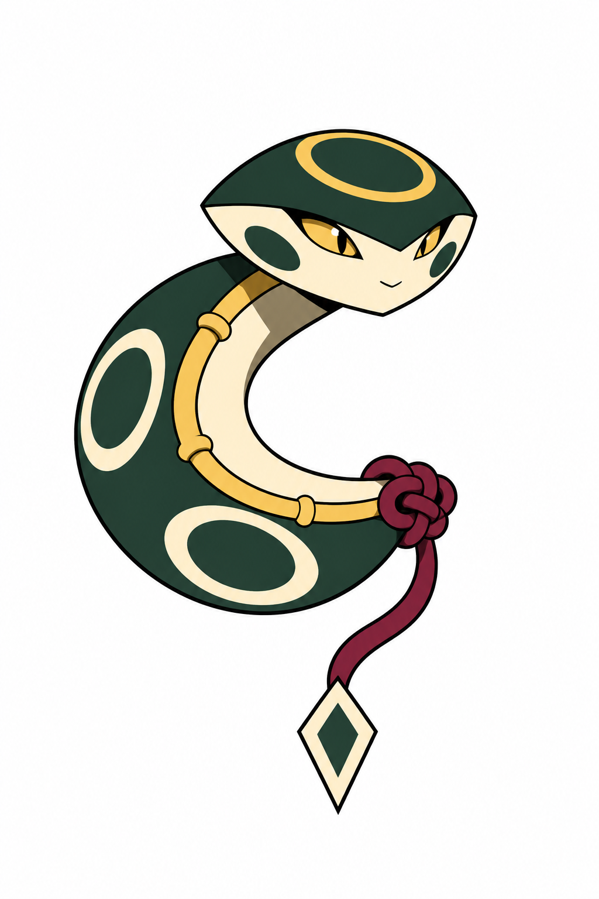
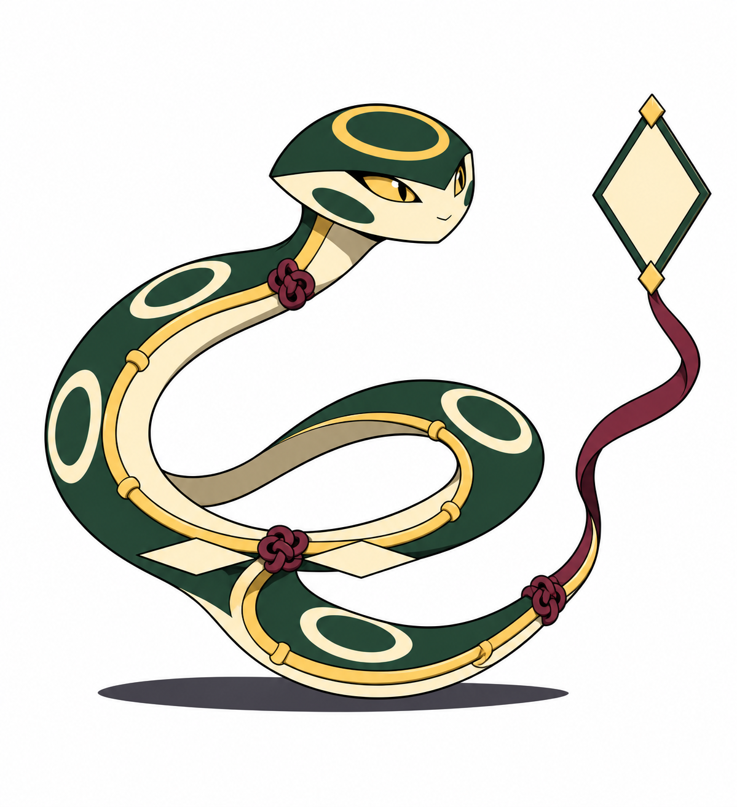
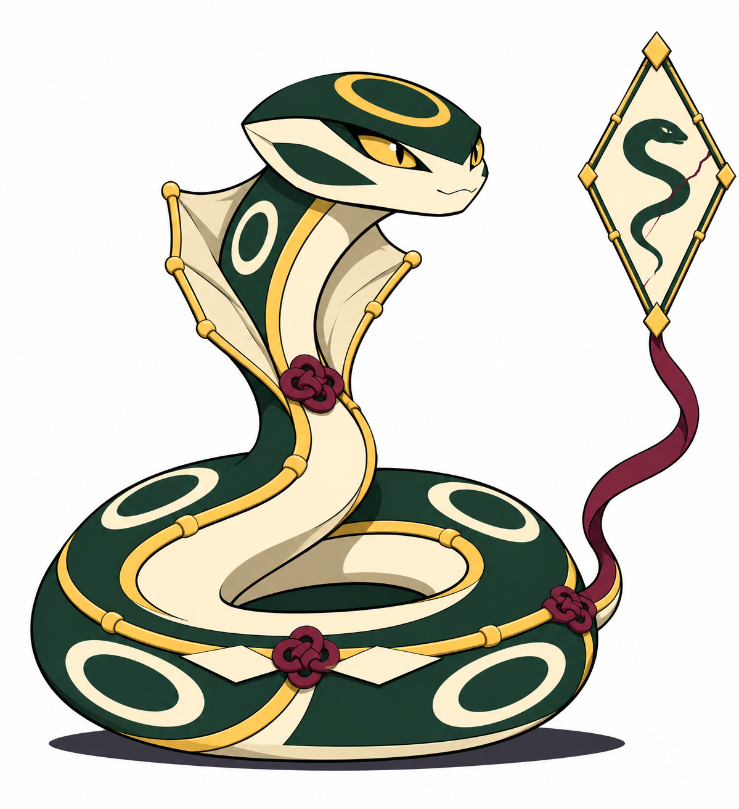
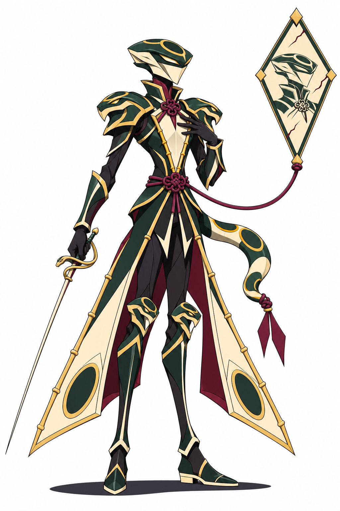

Bebê

Protege-se no próprio arco e descobre a linha que o mantém unido.
BriefQuatro concepts visuais aprovados; regras propostas. Primeiras três formas serpentinas; adulto cavaleiro. Pesquisa e limites · Chart

Protege-se no próprio arco e descobre a linha que o mantém unido.
Brief
Explora seus movimentos e carrega uma moldura ainda vazia.
Brief
Ganha peso de constritora e passa a cultivar a própria imagem.
Brief
Troca força bruta por precisão de esgrima; o retrato marcado contrasta com a armadura impecável.
Brief